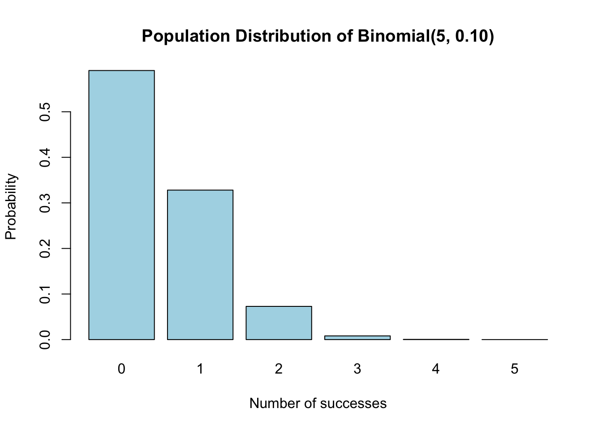
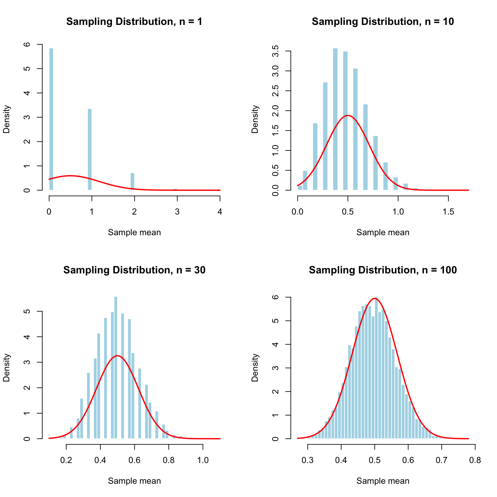
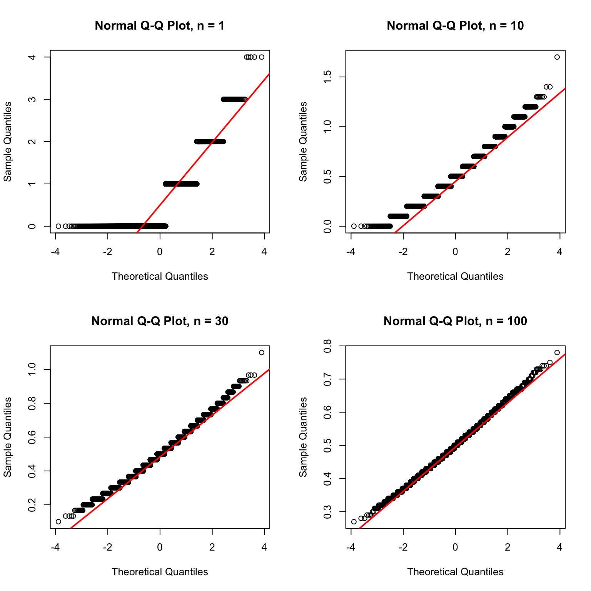
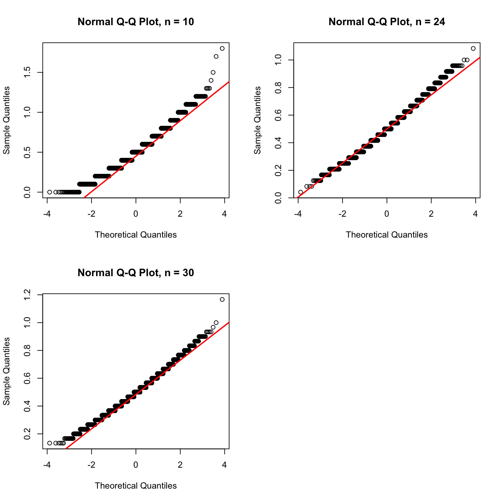

Theoretical Values for the Small Binomial Population
mean
variance
standard_deviation
skewness
excess_kurtosis
0.5
0.45
0.6708
1.1926
1.0222
The theoretical mean is:
\[
\mu = np = 5(0.10) = 0.5.
\]
The theoretical variance is:
\[
\sigma^2 = np(1-p)
= 5(0.10)(0.90)
= 0.45.
\]
The theoretical standard deviation is:
\[
\sigma = \sqrt{0.45}.
\]
The population is right-skewed because the probability of success is small. Most observations are expected to be close to zero, while larger numbers of successes are less common.
The original Binomial population is discrete and right-skewed. I expect the sampling distribution of the mean to become more symmetric and approximately normal as \(n\) increases.
Because the success probability is only 0.10, most observations are zero. Therefore, I expect smaller sample sizes to show noticeable spikes and right-skewness. As \(n\) increases, the sample means should become smoother, more bell-shaped, and closer to the theoretical mean of 0.5.
Original Population Distribution
barplot( population_probabilities,names.arg = population_values,col ="lightblue",main ="Population Distribution of Binomial(5, 0.10)",xlab ="Number of successes",ylab ="Probability")

The original population is discrete and strongly concentrated at zero. The probabilities become smaller as the number of successes increases. This creates a right-skewed population rather than a symmetric bell-shaped population.
Here, \(n\) is the number of independent Binomial observations in one sample. The value reps is the number of repeated samples used to create each sampling distribution.
Broad-Range Simulations
The seed is reset immediately before running the simulations so that the results are reproducible.
Running simulation for n = 1
Running simulation for n = 5
Running simulation for n = 10
Running simulation for n = 20
Running simulation for n = 30
Running simulation for n = 50
Running simulation for n = 75
Running simulation for n = 100
Each value of \(n\) produces 10,000 simulated sample means.
This table allows me to compare the simulated mean, standard error, skewness, kurtosis, outliers, and tail behavior for each sample size.
As \(n\) increases, the simulated mean should remain close to the theoretical mean of 0.5. The simulated standard error should become closer to the theoretical standard error. The skewness and excess kurtosis should also move closer to zero as the sampling distribution becomes more normal.
Broad-Range Histograms
broad_histogram_values <-c(1, 10, 30, 100)par(mfrow =c(2, 2))for (n in broad_histogram_values) { means <- broad_means[[paste0("n_", n)]]hist( means,breaks =40,probability =TRUE,main =paste("Sampling Distribution, n =", n ),xlab ="Sample mean",col ="lightblue",border ="white" )curve(dnorm( x,mean = population_mean,sd = population_sd /sqrt(n) ),add =TRUE,col ="red",lwd =2 )}

par(mfrow =c(1, 1))
For small values of \(n\), the histograms are concentrated around a few possible sample means and may show visible spikes. This happens because the original Binomial population is discrete.
As \(n\) increases, the sample means can take more possible values. The histogram becomes smoother, more symmetric, and closer to the red normal curve.
Broad-Range Normal Q-Q Plots
par(mfrow =c(2, 2))for (n in broad_histogram_values) { means <- broad_means[[paste0("n_", n)]]qqnorm( means,main =paste("Normal Q-Q Plot, n =", n ) )qqline( means,col ="red",lwd =2 )}

par(mfrow =c(1, 1))
For smaller values of \(n\), the points may curve away from the red line because the sampling distribution is still right-skewed and discrete.
As \(n\) increases, the points should follow the red line more closely. This suggests that the sampling distribution is becoming more similar to a normal distribution.
The simulated standard errors should generally follow the theoretical curve. The theoretical standard error decreases as \(n\) increases because averaging more observations reduces the spread of the sample means.
Choosing the Refinement Interval
The broad results suggested that \(n = 10\) was still noticeably discrete and right-skewed, while \(n = 30\) appeared closer to normal. Therefore, I refined the search between these two values.
Running simulation for n = 10
Running simulation for n = 11
Running simulation for n = 12
Running simulation for n = 13
Running simulation for n = 14
Running simulation for n = 15
Running simulation for n = 16
Running simulation for n = 17
Running simulation for n = 18
Running simulation for n = 19
Running simulation for n = 20
Running simulation for n = 21
Running simulation for n = 22
Running simulation for n = 23
Running simulation for n = 24
Running simulation for n = 25
Running simulation for n = 26
Running simulation for n = 27
Running simulation for n = 28
Running simulation for n = 29
Running simulation for n = 30
The goal is to select the smallest sample size that appears normal enough. The numerical criteria support the visual evidence from the histograms and Q-Q plots.
The histogram for the lower boundary may still show spikes and right-skewness because the sample means are based on a discrete population. The histogram for the selected sample size should be more balanced and approximately bell-shaped. The upper boundary shows how the shape changes for a larger sample size.
Fine-Grained Normal Q-Q Plots
par(mfrow =c(2, 2))for (n in refined_plot_values) { means <- refined_means[[paste0("n_", n)]]qqnorm( means,main =paste("Normal Q-Q Plot, n =", n ) )qqline( means,col ="red",lwd =2 )}par(mfrow =c(1, 1))

The Q-Q plot for the lower boundary may still curve away from the red line. The Q-Q plot for the selected sample size should be closer to a straight line. The upper boundary provides a comparison with a larger sample size.
Selected Sample Size
For the Small Binomial Population, I selected \(n =\) 24 as the smallest sample size that appeared normal enough.
For the broad investigation, I examined \(n = 1, 5, 10, 20, 30, 50, 75,\) and \(100\). I compared the histograms, normal Q-Q plots, skewness, kurtosis, simulated standard errors, and tail behavior for these sample sizes.
The broad results showed that the smaller sample sizes were concentrated around a few possible sample means and were affected by the right-skewed Binomial population. I then refined the search between \(n = 10\) and \(n = 30\) and tested every integer sample size in that interval.
The selected sample size was \(n =\) 24. Its histogram was more balanced and approximately bell-shaped than the histograms for the smaller sample sizes. Some small spikes may still appear because the original Binomial population is discrete, but the overall shape was closer to normal.
The normal Q-Q plot for \(n =\) 24 was reasonably close to a straight line. This supported the conclusion from the histogram that the sampling distribution was approximately normal.
The skewness at the selected sample size was closer to zero than it was for the smaller sample sizes. The excess kurtosis was also closer to zero, showing that the sampling distribution was becoming more similar to a normal distribution.
The simulated mean was close to the theoretical population mean of 0.5. The simulated standard error was also close to the theoretical standard error:
The discrete nature of the population caused some spikes in the histograms, but these spikes did not prevent the overall distribution from appearing approximately normal. There was no major outlier or tail pattern that changed my decision.
The numerical comparison supported the visual evidence by considering the mean error, standard-error error, and Q-Q plot straightness. I selected the smallest sample size that met the numerical criteria and also looked normal enough in the plots.
CLT Assumptions and Limitations
The Binomial observations are independent and identically distributed, and the population has a finite mean and finite variance. Therefore, the usual Central Limit Theorem applies.
The original Binomial population is discrete and right-skewed because the probability of success is only 0.10. As the sample size increases, averaging the observations makes the sampling distribution more symmetric and approximately normal.
The histograms may still show small spikes because the original observations can only take integer values. These spikes are expected from the discrete population and do not automatically mean that the sampling distribution is not normal enough.
The definition of “normal enough” is somewhat subjective. It depends on the histogram, Q-Q plot, numerical diagnostics, and how closely the simulated results match the theoretical values. Different reasonable criteria could lead to slightly different choices of \(n\).
Conclusion
For the Small Binomial Population, I selected \(n =\) 24 as the smallest sample size that appeared normal enough.
The original Binomial population was discrete and right-skewed, with most observations equal to zero. As the sample size increased, the sampling distribution of the mean became more symmetric and more similar to a normal distribution.
At the selected sample size, the histogram was approximately bell-shaped overall, even though it could still contain small spikes. The normal Q-Q plot was reasonably close to a straight line. The simulated mean was close to the theoretical mean of 0.5, and the simulated standard error was close to the theoretical value:
\[
\frac{\sqrt{0.45}}{\sqrt{n}}.
\]
The skewness and excess kurtosis were closer to zero than they were for smaller sample sizes. Outliers and tail behavior did not have a major effect on the decision.
Therefore, \(n =\) 24 was my evidence-based choice for when the Small Binomial sampling distribution became normal enough.